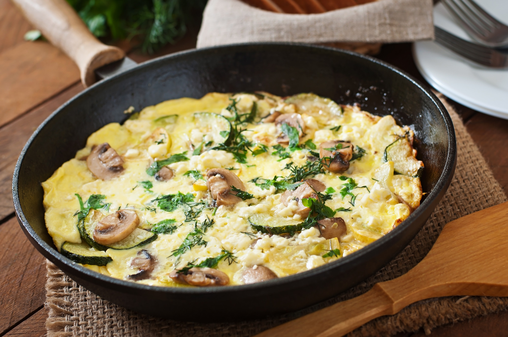

Receitas Nutritivas
Aqui estão 5 exemplos de receitas nutritivas e saudáveis:

1. Salada Colorida com Molho de Iogurte
Ingredientes: Alface, rúcula, cenoura ralada, tomate-cereja, frango grelhado desfiado e molho de iogurte natural com limão e ervas.
Benefício: Rica em fibras, proteínas e vitaminas.

2. Omelete de Legumes
Ingredientes: Ovos, cenoura ralada, abobrinha picada, cebola e temperos naturais (orégano, salsa, sal moderado).
Benefício: Fonte de proteínas e baixo carboidrato.

Peixe Grelhado com Purê de Batata-Doce
Ingredientes: Filé de peixe grelhado, batata-doce cozida amassada com azeite e ervas finas.
Benefício: Fonte de ômega-3, carboidratos complexos e antioxidantes.